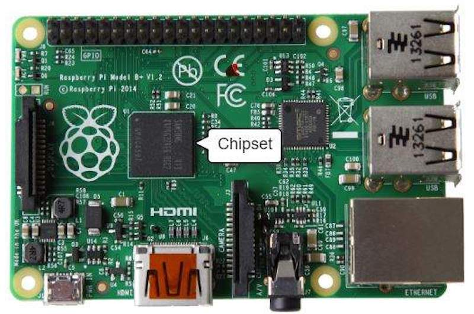
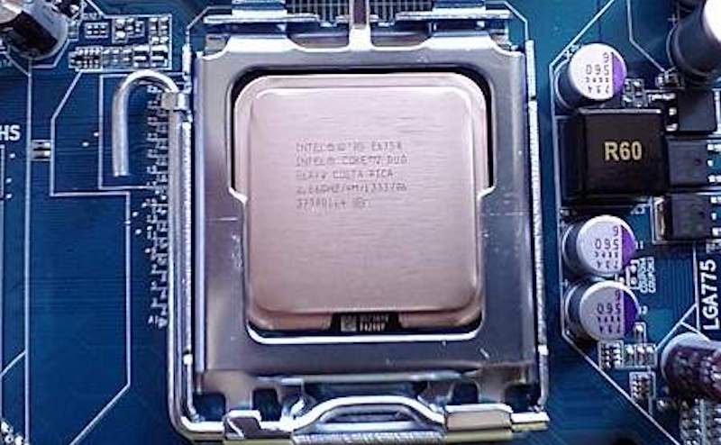
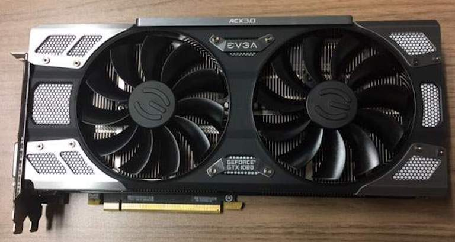
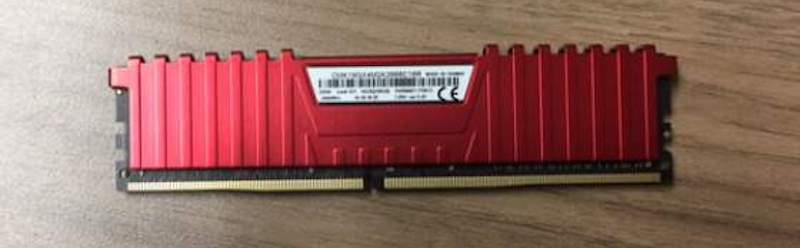

A computer is any machine that can be programmed to carry out a set of algorithms and arithmetic instructions.
Of course, the computers we think of today are so much more than that—and I’m talking beyond just being machines used to play games and watch videos of cats on the internet!
Whether it's a gaming system or a home PC, the five main components that make up a typical, present-day computer include:
In terms of construction, each of these main components are attached to the motherboard and then put into a protective case—resembling the clean, polished look most of us are accustomed to seeing.
Sure, most computers have their own distinct design - and different brands of hardware installed - but the components listed above are standard across all computers.
Important: A quick note before we dive into the details—I’m listing and talking about the different components of a computer. This is by no means intended to be an invitation to disassemble your computer, nor is it a set of instructions to do so. Without the proper knowledge, you can severely damage your computer, and importantly, doing so is unsafe.
What it is: All components of a computer communicate through a circuit board called the motherboard, as was mentioned above.
What it does: Think of the motherboard as the glue that holds everything else together.
The motherboard’s video card and Central Processing Unit are contained in an integrated (built-in) chipset, shown in the picture below:
This is where input/output devices such as a keyboard, mouse, and speakers get plugged in.
What it is: The CPU is often called the "brain" of a computer, thanks to its direct plug connection to the motherboard, and communication with all of the computer’s other components.
What it does: Whenever you write a line of code (in Python, Java, C++, or any other programming language), it's broken down into assembly language—which is a language that the processor can understand. It fetches, decodes, and executes these instructions.
And that’s where the CPU comes in—all the processes a computer handles are taken care of by the CPU.
What it is: It's not uncommon to hear gamers obsess over the next new graphics card, as these graphic cards make it possible for computers to generate high-end visuals like those found in the many different types of video games.
In addition to video games, though, good graphics cards also come in handy for those who rely on images in order to execute their craft, like 3D modelers using resource-intensive software.
What it does: Graphics cards often communicate directly with the display monitor, meaning a $1,000 graphics card won't be of much use if there isn't a high-end monitor connected to it.
What it is: RAM, also known as volatile memory, stores data regarding frequently accessed programs and processes. (It's called volatile memory because it gets erased every time the computer restarts.)
What it does: RAM helps programs and games start up and close quickly.
What it is: All computers need somewhere to store their data. Modern computers either use a Hard Disk Drive (HDD) or Solid State Drive (SSD).
What it does: HDDs are made of an actual disk onto which data is stored. The disk is read by a mechanical arm. (HDDs are cheaper than SSDs, but are slowly becoming more and more obsolete.)
SSDs (think SIM cards) have no moving parts and are faster than a hard drive, because no time is spent waiting for a mechanical arm to find data on a physical location on the disk.
Some enjoy computers from the frontend, spending time on YouTube, shopping on eBay, and playing video games (and experiencing the benefits of doing so.).
But for others, it’s the “how” that proves to be more intriguing! Taking computers apart and putting them back together, adding new hardware, troubleshooting hardware assembly, and booting them up (and crossing their fingers!) is all part of such intrigue.
Credit to this website